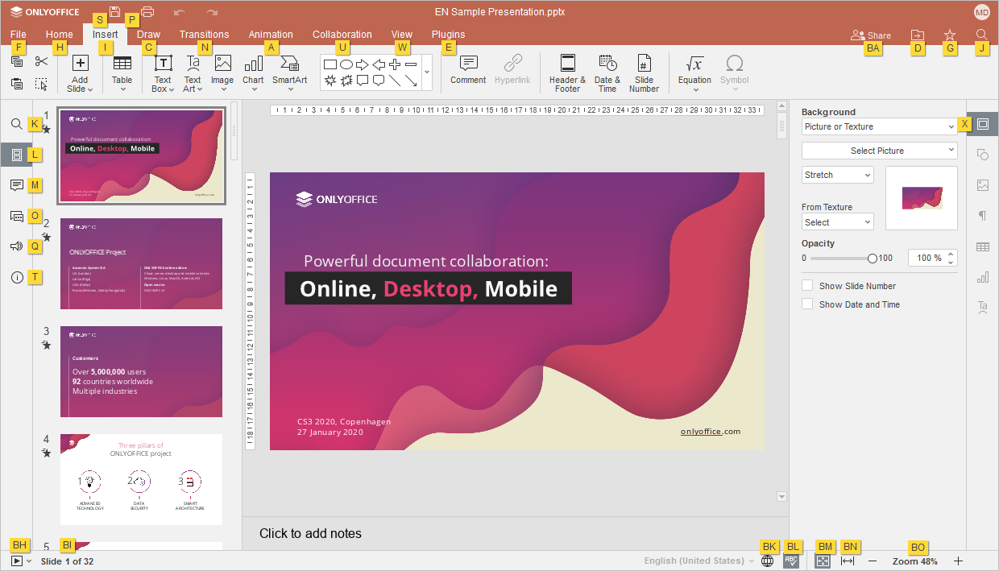
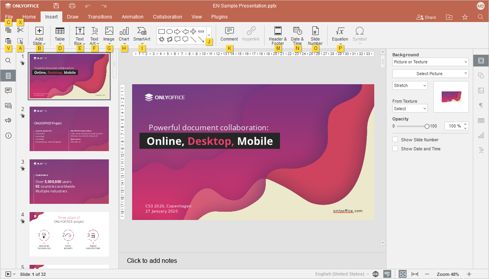

Prečice na tastaturi
Prečice na tastaturi za savete o tasterima
Koristite prečice na tastaturi za brži i lakši pristup funkcijama Presentation Editor-a bez korišćenja miša.
- Pritisnite taster Alt (Option za macOS) da biste uključili sve savete o tasterima za zaglavlje editora, gornju traku sa alatkama, desnu i levu bočnu traku i statusnu traku.
-
Pritisnite slovo koje odgovara stavci koju želite da koristite. Dodatni saveti o tasterima mogu se pojaviti u zavisnosti od tastera koji pritisnete. Prvi saveti o tasterima se skrivaju kada se pojave dodatni saveti.
Na primer, da biste pristupili kartici Umetanje, pritisnite Alt (Option za macOS) da biste videli sve primarne savete o tasterima.

Pritisnite slovo I da biste pristupili kartici Umetanje i videćete sve dostupne prečice za ovu karticu.

Zatim pritisnite slovo koje odgovara stavci koju želite da podesite.
- Pritisnite Alt (Option za macOS) da biste sakrili sve savete o tasterima ili pritisnite Escape da biste se vratili na prethodnu grupu saveta o tasterima.
Najčešće prečice na tastaturi možete pronaći na listi ispod.
Napomena: za macOS, neke prečice sadrže tastere Home, End, Page Up i Page Down koji su dostupni samo na proširenoj tastaturi. Ako nemate ove tastere, koristite prečice navedene iznad (tj. koristite ^ Ctrl/⌘ Cmd+← ili Fn+← umesto Home, ^ Ctrl/⌘ Cmd+→ ili Fn+→ umesto End, Fn+↑ umesto Page Up, Fn+↓ umesto Page Down).
- Windows/Linux
- macOS
| Rad sa prezentacijom | |||
|---|---|---|---|
| Otvori panel „Datoteka“ | Alt+F | ^ Ctrl+⌥ Option+F | Otvara panel Datoteka za čuvanje, preuzimanje, štampanje trenutne prezentacije, pregled informacija, kreiranje nove prezentacije ili otvaranje postojeće, pristup pomoći za Presentation Editor ili naprednim podešavanjima. |
| Otvori dijalog „Pronađi“ | Ctrl+F | ^ Ctrl+F, ⌘ Cmd+F |
Otvara dijalog Pronađi za pretragu znaka/reči/izraza u trenutno uređivanoj prezentaciji. |
| Otvori meni (panel) „Pronađi i zameni“ sa poljem za zamenu | Ctrl+H | ^ Ctrl+H | Otvara meni (panel) Pronađi i zameni sa poljem za zamenu kako bi se zamenilo jedno ili više pojavljivanja pronađenih znakova. |
| Otvori panel „Komentari“ | Ctrl+⇧ Shift+H | ^ Ctrl+⇧ Shift+H, ⌘ Cmd+⇧ Shift+H |
Otvara panel Komentari za dodavanje sopstvenog komentara ili odgovaranje na komentare drugih korisnika. |
| Otvori polje za unos komentara | Alt+H | ⌘ Cmd+⌥ Option+A | Otvara polje za unos podataka u koje možete dodati tekst komentara. |
| Otvori panel „Ćaskanje“ (Online editori) | Alt+Q | ^ Ctrl+⌥ Option+Q | Otvara panel Ćaskanje u Online editorima i omogućava slanje poruke. |
| Sačuvaj prezentaciju | Ctrl+S | ^ Ctrl+S, ⌘ Cmd+S |
Čuva sve izmene u trenutno uređivanoj prezentaciji u Presentation Editor-u. Aktivni fajl se čuva pod postojećim imenom, na istoj lokaciji i u istom formatu. |
| Štampaj prezentaciju | Ctrl+P | ^ Ctrl+P, ⌘ Cmd+P |
Štampa prezentaciju pomoću jednog od dostupnih štampača ili je čuva u fajl. |
| Preuzmi kao... | Ctrl+⇧ Shift+S | ^ Ctrl+⇧ Shift+S, ⌘ Cmd+⇧ Shift+S |
Otvara panel Preuzmi kao... za čuvanje trenutno uređivane prezentacije na čvrsti disk računara u jednom od podržanih formata: PPTX, PPSX, PDF, ODP, POTX, PDF/A, OTP, PNG, JPG. |
| Prikaz preko celog ekrana (Online editori) | F11 | Prebacuje na prikaz preko celog ekrana u Online editorima kako bi se Presentation Editor uklopio u ekran. | |
| Meni Pomoć | F1 | Fn+F1 | Otvara meni Pomoć u Presentation Editor-u. |
| Otvori postojeću datoteku | Ctrl+O | ⌘ Cmd+O | Otvara standardni dijalog koji omogućava izbor postojeće datoteke. Ako izaberete datoteku u ovom dijalogu i kliknete na dugme Otvori, datoteka će biti otvorena u novoj kartici ili prozoru Desktop Editors. |
| Prebaci se na sledeću karticu | Ctrl+↹ Tab | ^ Ctrl+↹ Tab | Prebacuje se na sledeću karticu datoteke u Desktop Editors ili karticu pregledača u Online Editors. |
| Prebaci se na prethodnu karticu | Ctrl+Shift+↹ Tab | ^ Ctrl+⇧ Shift+↹ Tab | Prebacuje se na prethodnu karticu datoteke u Desktop Editors ili karticu pregledača u Online Editors. |
| Zatvori datoteku | Ctrl+W, Ctrl+F4 |
⌘ Cmd+W | Zatvara trenutni prozor prezentacije. |
| Kontekstni meni elementa | ⇧ Shift+F10 | ⇧ Shift+Fn+F10 | Otvara kontekstni meni izabranog elementa. |
| Zatvori meni ili modalni prozor, resetuj režime itd. | Esc | Esc | Zatvara meni ili modalni prozor. Resetuje režim dodavanja oblika. Uklanja kursor iz sadržaja oblika. Postepeno uklanja selekciju (npr. ako je izabran sadržaj oblika unutar grupe, kursor će se prvo ukloniti iz sadržaja, zatim iz oblika, pa iz grupe). Poništava kopirani format. Resetuje prevlačenje teksta. Resetuje režim izbora markera. |
| Resetuj parametar „Uvećanje“ | Ctrl+0 | ^ Ctrl+0 ili ⌘ Cmd+0 | Resetuje parametar „Uvećanje“ trenutne prezentacije na podrazumevanu vrednost „Prilagodi slajdu“. |
| Navigacija | |||
| Prvi slajd | Home | Fn+← Home |
Prelazi na prvi slajd trenutno uređivane prezentacije / prvu sličicu u listi sličica. |
| Poslednji slajd | End | Fn+→ End |
Prelazi na poslednji slajd trenutno uređivane prezentacije / poslednju sličicu u listi sličica. |
| Sledeći slajd | Page Down, ↓, → |
↓, Fn+↓ ↓, Page Down |
Prelazi na sledeći slajd trenutno uređivane prezentacije / sledeću sličicu u listi sličica. |
| Prethodni slajd | Page Up, ↑, ← |
↑, Fn+↑ ↑, Page Up |
Prelazi na prethodni slajd trenutno uređivane prezentacije / prethodnu sličicu u listi sličica. |
| Uvećaj | Ctrl++ | ^ Ctrl+=, ⌘ Cmd+= |
Uvećava prikaz trenutno uređivane prezentacije. |
| Umanji | Ctrl+- | ^ Ctrl+-, ⌘ Cmd+- |
Umanjuje prikaz trenutno uređivane prezentacije. |
| Navigacija između kontrola u modalnim dijalozima | ↹ Tab/⇧ Shift+↹ Tab | ↹ Tab/⇧ Shift+↹ Tab | Omogućava kretanje između kontrola kako bi se fokus prebacio na sledeću ili prethodnu kontrolu u modalnim dijalozima. |
| Radnje nad slajdovima | |||
| Novi slajd | Ctrl+M, Enter |
^ Ctrl+M, ⌘ Cmd+M, Return |
Kreira novi slajd i dodaje ga iza izabranog u listi. Prečica Ctrl+M se takođe koristi za kreiranje prvog slajda u prezentaciji koja još nema nijedan slajd. |
| Ukloni slajd | Delete, Backspace |
Delete, Fn+Delete |
Uklanja trenutno izabrani slajd u listi ili više izabranih slajdova. |
| Dupliraj slajd | Ctrl+D | ⌘ Cmd+D, ^ Ctrl+D |
Duplira izabrani slajd u listi. |
| Pomeri slajd nagore | Ctrl+↑ | ⌘ Cmd+↑ | Pomera izabrani slajd ili više izabranih slajdova iznad prethodnog u listi (kada je fokus na sličicama). |
| Pomeri slajd nadole | Ctrl+↓ | ⌘ Cmd+↓ | Pomera izabrani slajd ili više izabranih slajdova ispod sledećeg u listi (kada je fokus na sličicama). |
| Pomeri slajd na početak | Ctrl+⇧ Shift+↑, Ctrl+⇧ Shift+Page Up |
⌘ Cmd+⇧ Shift+↑, ^ Ctrl+⇧ Shift+↑ ⌘ Cmd+⇧ Shift+Page Up, ^ Ctrl+⇧ Shift+Page Up |
Pomera izabrani slajd ili više slajdova na sam početak liste (kada je fokus na sličicama). |
| Pomeri slajd na kraj | Ctrl+⇧ Shift+↓, Ctrl+⇧ Shift+Page Down |
⌘ Cmd+⇧ Shift+↓, ^ Ctrl+⇧ Shift+↓ ⌘ Cmd+⇧ Shift+Page Down, ^ Ctrl+⇧ Shift+Page Down |
Pomera izabrani slajd ili više slajdova na sam kraj liste (kada je fokus na sličicama). |
| Radnje nad objektima | |||
| Rad sa oblicima | ↵ Enter | ↵ Return | Kada je oblik izabran, ako ne sadrži sadržaj, kreira sadržaj i pomera kursor na početak reda. Ako je sadržaj prazan, pomera kursor u njega, u suprotnom selektuje ceo sadržaj. |
| Rad sa grafikonima | ↵ Enter | ↵ Return | Kada je naslov grafikona izabran, ako je naslov prazan, pomera kursor na početak reda, u suprotnom selektuje tekst. |
| Kreiraj kopiju prilikom prevlačenja | Ctrl | ^ Ctrl | Izaberite objekat i držite navedeni taster prilikom prevlačenja objekta kako biste kreirali njegovu kopiju na lokaciji na koju je pomeren. |
| Kreiraj kopiju | Ctrl+D | ^ Ctrl+D, ⌘ Cmd+D |
Izaberite objekat i pritisnite navedenu prečicu da biste kreirali kopiju objekta pored izabranog. |
| Grupiši | Ctrl+G | ⌘ Cmd+G, ^ Ctrl+G |
Grupiše izabrane objekte. |
| Razgrupiši | Ctrl+⇧ Shift+G | ⌘ Cmd+⇧ Shift+G, ^ Ctrl+⇧ Shift+G |
Razgrupiše izabranu grupu objekata. |
| Pomeri fokus na sledeći objekat | ↹ Tab | ↹ Tab | Pomera fokus na sledeći objekat nakon trenutno izabranog. |
| Pomeri fokus na prethodni objekat | ⇧ Shift+↹ Tab | ⇧ Shift+↹ Tab | Pomera fokus na prethodni objekat ispred trenutno izabranog. |
| Promeni ugao linije/strelice prilikom crtanja | ⇧ Shift + prevlačenje (prilikom crtanja linija/strelica) | ⇧ Shift + prevlačenje (prilikom crtanja linija/strelica) | Držite taster Shift dok crtate liniju/strelicu i rotirajte vrh strelice/kraj linije da biste promenili ugao. Linija/strelica će se rotirati tačno za 45 stepeni. |
| Pomeranje piksel po piksel | Ctrl+← → ↑ ↓ | ⌘ Cmd+← → ↑ ↓ | Držite navedeni taster i koristite strelice na tastaturi da biste pomerali izabrani objekat ulevo, udesno, nagore ili nadole po jedan piksel. |
| Pomeri oblik velikim korakom | ← → ↑ ↓ | ← → ↑ ↓ | Koristite strelice na tastaturi da biste pomerili izabrani objekat ulevo, udesno, nagore ili nadole većim korakom. |
| Izmena objekata | |||
| Ograniči pomeranje | ⇧ Shift + prevlačenje | ⇧ Shift + prevlačenje | Ograničava pomeranje izabranog objekta horizontalno ili vertikalno. |
| Podešavanje rotacije od 15 stepeni | ⇧ Shift + prevlačenje (prilikom rotacije) | ⇧ Shift + prevlačenje (prilikom rotacije) | Ograničava ugao rotacije na korake od 15 stepeni. |
| Zadrži proporcije | ⇧ Shift + prevlačenje (prilikom promene veličine) | ⇧ Shift + prevlačenje (prilikom promene veličine) | Zadržava proporcije izabranog objekta prilikom promene veličine. |
| Rad sa tabelama | |||
| Prelazak na sledeću ćeliju u redu | ↹ Tab | ↹ Tab | Prelazi na sledeću ćeliju u redu tabele. |
| Prelazak na prethodnu ćeliju u redu | ⇧ Shift+↹ Tab | ⇧ Shift+↹ Tab | Prelazi na prethodnu ćeliju u redu tabele. |
| Prelazak na sledeći red | ↓ | ↓ | Prelazi na sledeći red u tabeli. |
| Prelazak na prethodni red | ↑ | ↑ | Prelazi na prethodni red u tabeli. |
| Započni novi pasus | ↵ Enter | ↵ Return | Započinje novi pasus unutar ćelije. Ako su ćelije izabrane, briše njihov sadržaj. Ako je tabela izabrana, pomera kursor u prvu ćeliju. Ako je prazna, pomera kursor na početak, u suprotnom selektuje sadržaj ćelije. |
| Dodaj novi red | ↹ Tab u donjoj desnoj ćeliji tabele. | ↹ Tab u donjoj desnoj ćeliji tabele. | Dodaje novi red na dno tabele. |
| Pregled prezentacije | |||
| Pokreni prezentaciju | Ctrl+F5 | ⌘ Cmd+⇧ Shift+↵ Return | Pokreće prezentaciju od početka. |
| Kretanje unapred | ↵ Enter, Page Down, →, ↓, ␣ Spacebar |
↵ Return, Fn+↓, →, ↓, ␣ Spacebar ↵ Return, Page Down, →, ↓, ␣ Spacebar |
Prikazuje sledeći efekat prelaza ili prelazi na sledeći slajd. |
| Kretanje unazad | Page Up, ←, ↑ |
Fn+↑, ←, ↑ Page Up, ←, ↑ |
Prikazuje prethodni efekat prelaza ili se vraća na prethodni slajd. |
| Prelazak na prvi slajd | Home | Fn+← Home |
Prelazi na prvi slajd. |
| Prelazak na poslednji slajd | End | Fn+→ End |
Prelazi na poslednji slajd. |
| Prelazak na navedeni slajd | broj slajda+Enter | broj slajda+↵ Return | Prelazi na navedeni slajd. |
| Zatvori pregled | Esc | Esc | Završava prezentaciju. U web verziji, prvi pritisak tastera Esc izlazi iz režima celog ekrana pregledača, a drugi izlazi iz režima prezentacije. |
| Poništi i ponovi | |||
| Poništi | Ctrl+Z | ^ Ctrl+Z, ⌘ Cmd+Z |
Poništava poslednju izvršenu radnju. |
| Ponovi | Ctrl+Y | ^ Ctrl+Y, ⌘ Cmd+Y |
Ponavlja poslednju poništenu radnju. |
| Iseci, kopiraj i nalepi | |||
| Iseci | Ctrl+X, ⇧ Shift+Delete |
⌘ Cmd+X | Iseca izabrani objekat/tekst/slajd u listi slajdova i smešta ga u memoriju privremene ostave računara. Isečeni objekat se kasnije može umetnuti na drugo mesto u istoj prezentaciji. |
| Kopiraj | Ctrl+C, Ctrl+Insert |
⌘ Cmd+C | Šalje izabrani objekat/tekst/slajd u listi slajdova u memoriju privremene ostave računara. Kopirani objekat se kasnije može umetnuti na drugo mesto u istoj prezentaciji. |
| Nalepi | Ctrl+V, ⇧ Shift+Insert |
⌘ Cmd+V | Umeće prethodno kopirani objekat/tekst/slajd iz memorije privremene ostave računara na trenutnu poziciju kursora. Objekat može biti kopiran iz iste prezentacije, iz druge prezentacije, iz drugog editora ili iz nekog drugog programa. |
| Nalepi tekst bez formatiranja | Ctrl+⇧ Shift+V | ⌘ Cmd+⇧ Shift+V | Umeće prethodno kopirani deo teksta iz memorije privremene ostave računara na trenutnu poziciju kursora bez zadržavanja originalnog formatiranja. Tekst može biti kopiran iz istog dokumenta, iz drugog dokumenta ili iz nekog drugog programa. |
| Kopiraj stil | Alt+Ctrl+C | ⌘ Cmd+⌥ Option+C, ^ Ctrl+⌥ Option+C |
Kopira formatiranje iz izabranog fragmenta trenutno uređivanog teksta. Kopirano formatiranje se kasnije može primeniti na drugi fragment teksta u istoj prezentaciji. |
| Primeni stil | Alt+Ctrl+V | ⌘ Cmd+⌥ Option+V, ^ Ctrl+⌥ Option+V |
Primenjuje prethodno kopirano formatiranje na tekst u trenutno uređivanom tekstualnom okviru. |
| Posebne opcije lepljenja 1 | |||
| Koristi temu odredišta | Ctrl zatim H | ^ Ctrl zatim H | Primenjuje formatiranje definisano temom trenutne prezentacije. |
| Zadrži izvorno formatiranje | Ctrl zatim K | ^ Ctrl zatim K | Zadržava izvorno formatiranje kopiranog teksta. |
| Nalepi kao sliku | Ctrl zatim U | ^ Ctrl zatim U | Lepljenjem pretvara tekst u sliku tako da se ne može uređivati. |
| Zadrži samo tekst | Ctrl zatim T | ^ Ctrl zatim T | Lepljenje teksta bez originalnog formatiranja. |
| Rad sa hipervezama | |||
| Umetni hipervezu | Ctrl+K | ^ Ctrl+K, ⌘ Cmd+K |
Umeće hipervezu koja se može koristiti za odlazak na veb adresu ili na određeni slajd u prezentaciji. |
| Poseti hipervezu | Enter | Return | Otvara hipervezu (kada je kursor postavljen na hipervezu). |
| Biranje pomoću miša | |||
| Dodaj izabranom fragmentu | ⇧ Shift | ⇧ Shift | Započnite selekciju, držite taster ⇧ Shift i kliknite na mesto gde želite da završite selekciju. |
| Biranje pomoću tastature | |||
| Izaberi sve | Ctrl+A | ^ Ctrl+A, ⌘ Cmd+A |
Izabira sve slajdove (u listi slajdova) ili sve objekte unutar slajda (u oblasti za uređivanje slajda) ili sav tekst (u tekstualnom okviru) – u zavisnosti od toga gde se nalazi kursor miša. |
| Dodaj sledeći slajd u listi slajdova selekciji | Shift+Page Down, ⇧ Shift+↓ |
⇧ Shift+↓, ⇧ Shift+Fn+↓ ⇧ Shift+↓, ⇧ Shift+Page Down |
Dodaje sledeći slajd u listi slajdova selekciji (kada je fokus na sličicama). |
| Dodaj prethodni slajd u listi slajdova selekciji | Shift+Page Up, ⇧ Shift+↑ |
⇧ Shift+↑, ⇧ Shift+Fn+↑ ⇧ Shift+↑, ⇧ Shift+Page Up |
Dodaje prethodni slajd u listi slajdova selekciji (kada je fokus na sličicama). |
| Izaberi do prvog slajda | Shift+Home | ⇧ Shift+Fn+← ⇧ Shift+Home |
Bira slajdove do prvog slajda počevši od trenutnog slajda na kojem je fokus u listi sličica. |
| Izaberi do poslednjeg slajda | Shift+End | ⇧ Shift+Fn+→ ⇧ Shift+End |
Bira slajdove do poslednjeg slajda počevši od trenutnog slajda na kojem je fokus u listi sličica. |
| Izaberi tekst od kursora do početka reda | ⇧ Shift+Home | ⇧ Shift+Fn+← ⇧ Shift+Home |
Bira deo teksta od kursora do početka trenutnog reda. |
| Izaberi tekst od kursora do kraja reda | ⇧ Shift+End | ⇧ Shift+Fn+→ ⇧ Shift+End |
Bira deo teksta od kursora do kraja trenutnog reda. |
| Izaberi jedan znak udesno | ⇧ Shift+→ | ⇧ Shift+→ | Bira jedan znak desno od pozicije kursora. |
| Izaberi jedan znak ulevo | ⇧ Shift+← | ⇧ Shift+← | Bira jedan znak levo od pozicije kursora. |
| Izaberi do kraja reči | Ctrl+⇧ Shift+→ | ⇧ Shift+⌥ Option+→ | Bira deo teksta od kursora do kraja reči. |
| Izaberi do početka reči | Ctrl+⇧ Shift+← | ⇧ Shift+⌥ Option+← | Bira deo teksta od kursora do početka reči. |
| Izaberi jedan red nagore | ⇧ Shift+↑ | ⇧ Shift+↑ | Pomeranje kursora jedan red nagore uz biranje svih znakova između prethodne i trenutne pozicije kursora. |
| Izaberi jedan red nadole | ⇧ Shift+↓ | ⇧ Shift+↓ | Pomeranje kursora jedan red nadole uz biranje svih znakova između prethodne i trenutne pozicije kursora. |
| Poništi izbor svega | ⇧ Shift+Esc | Esc, ⇧ Shift+Esc |
Poništava ceo trenutni izbor. |
| Stilizovanje teksta | |||
| Neštampajući znakovi | Ctrl+⇧ Shift+8 | ^ Ctrl+⇧ Shift+8, ⌘ Cmd+⇧ Shift+8 |
Prikazuje ili skriva neštampajuće znakove. |
| Podebljano | Ctrl+B | ^ Ctrl+B, ⌘ Cmd+B |
Čini font izabranog dela teksta podebljanim, dajući mu naglašeniji izgled. |
| Iskošeno | Ctrl+I | ⌘ Cmd+I | Čini font izabranog dela teksta blago nagnutim udesno. |
| Podvučeno | Ctrl+U | ^ Ctrl+U, ⌘ Cmd+U |
Podvlači izabrani deo teksta linijom ispod slova. |
| Precrtano | Ctrl+5 | ^ Ctrl+5, ⌘ Cmd+5 |
Precrtava izabrani deo teksta linijom kroz slova. |
| Indeks | Ctrl+. | ^ Ctrl+., ⌘ Cmd+. |
Umanjuje izabrani deo teksta i postavlja ga u donji deo reda teksta, npr. kao u hemijskim formulama. |
| Eksponent | Ctrl+, | ^ Ctrl+,, ⌘ Cmd+, |
Umanjuje izabrani deo teksta i postavlja ga u gornji deo reda teksta, npr. kao u razlomcima. |
| Lista sa oznakama | Ctrl+⇧ Shift+L | ^ Ctrl+⇧ Shift+L, ⌘ Cmd+⇧ Shift+L |
Kreira nenumerisanu listu sa oznakama od izabranog dela teksta ili započinje novu. |
| Ukloni formatiranje | Ctrl+␣ Spacebar | ^ Ctrl+Fn+␣ Spacebar, ⌘ Cmd+Fn+␣ Spacebar |
Uklanja formatiranje izabranog dela teksta. |
| Povećaj font | Ctrl+] | ^ Ctrl+], ⌘ Cmd+] |
Povećava veličinu fonta izabranog dela teksta za 1 poen. |
| Smanji font | Ctrl+[ | ^ Ctrl+[, ⌘ Cmd+[ |
Smanjuje veličinu fonta izabranog dela teksta za 1 poen. |
| Poravnaj po sredini | Ctrl+E | ^ Ctrl+E, ⌘ Cmd+E |
Poravnava tekst po sredini između leve i desne ivice. |
| Poravnaj obostrano | Ctrl+J | ^ Ctrl+J, ⌘ Cmd+J |
Poravnava tekst obostrano dodavanjem dodatnog razmaka između reči tako da se leva i desna ivica teksta poravnaju sa marginama pasusa. |
| Poravnaj desno | Ctrl+R | ^ Ctrl+R, ⌘ Cmd+R |
Poravnava tekst uz desnu ivicu tekstualnog okvira, dok leva strana ostaje neporavnata. |
| Poravnaj levo | Ctrl+L | ^ Ctrl+L, ⌘ Cmd+L |
Poravnava tekst uz levu ivicu tekstualnog okvira, dok desna strana ostaje neporavnata. |
| Povećaj levi uvlačak | Ctrl+M | ^ Ctrl+M, ⌘ Cmd+M |
Povećava levi uvlačak pasusa za jednu tabulaciju. |
| Smanji levi uvlačak | Ctrl+⇧ Shift+M | ^ Ctrl+⇧ Shift+M, ⌘ Cmd+⇧ Shift+M |
Smanjuje levi uvlačak pasusa za jednu tabulaciju. |
| Obriši jedan znak levo | ← Backspace | Delete | Briše jedan znak/izbor/grafički objekat levo od kursora. |
| Obriši jedan znak desno | Delete | Fn+Delete | Briše jedan znak/izbor/grafički objekat desno od kursora. |
| Obriši reč/izbor/grafički objekat levo od kursora | Ctrl+← Backspace | ⌥ Option+Delete | Briše jednu reč/izbor/grafički objekat levo od kursora. |
| Obriši reč/izbor/grafički objekat desno od kursora | Ctrl+Delete | Fn+⌥ Option+Delete | Briše jednu reč/izbor/grafički objekat desno od kursora. |
| Povećaj nivo stavke liste | ↹ Tab | ↹ Tab | Dodaje nivo numeraciji pasusa (kada je kursor na početku reda). |
| Smanji nivo stavke liste | ⇧ Shift+↹ Tab | ⇧ Shift+↹ Tab | Uklanja nivo iz numeracije pasusa (kada je kursor na početku reda). |
| Dodaj tabulator u pasus | ↹ Tab | ↹ Tab | Dodaje tabulator u pasus. |
| Dodaj novi rezervisani element u argument jednačine | Shift+Enter, Enter |
⇧ Shift+Return, Return |
Dodaje novi rezervisani element u argument jednačine. |
| Dodaj prelom reda u tekst | Shift+Enter | ⇧ Shift+Return | Dodaje prelom reda u tekst. |
| Dodaj pasus | Enter | Return | Dodaje novi pasus ili novi red u rezervisano mesto za Naslov/Podnaslov. |
| Umetanje specijalnih znakova | |||
| Umetni znak evra | Ctrl+Alt+E | ^ Ctrl+⌥ Option+E, ⌘ Cmd+⌥ Option+E |
Umeće znak evra (€) na trenutnu poziciju kursora. |
| Umetni dugu crtu (em crtica) | ⌥ Option+⇧ Shift+- | Umeće dugu crtu „—“ na trenutnu poziciju kursora. | |
| Umetni kratku crtu (en crtica) | ⌥ Option+- | Umeće kratku crtu „–“ na trenutnu poziciju kursora. | |
| Kreiraj nerazdvojivi razmak | Ctrl+⇧ Shift+␣ Spacebar | ^ Ctrl+⇧ Shift+Fn+␣ Spacebar, ⌘ Cmd+⇧ Shift+Fn+␣ Spacebar |
Kreira razmak između znakova koji se ne može koristiti za prelazak u novi red. |
| Rad sa tastaturom koja podržava umetanje Unicode simbola | ⌥ Option+Q, ⌥ Option+F, ⇧ Shift+⌥ Option+7, i drugi |
Prilikom korišćenja prečica ⌥ Option+simbol na tastaturi, na tastaturama koje podržavaju umetanje Unicode simbola, dodaju se odgovarajući simboli. Primeri su navedeni ispod. Sa engleskim ABC rasporedom tastature, prečica ⌥ Option+Q umeće simbol „œ“, dok prečica ⌥ Option+F umeće simbol funkcije „ƒ“. Sa rasporedom US International bez deadkeys, prečica ⌥ Option+Q umeće simbol „ä“. Sa švajcarsko-nemačkim rasporedom tastature, prečica ⇧ Shift+⌥ Option+7 umeće simbol „\”. |
|
| Kretanje kroz tekst | |||
| Pomeranje za jedan znak ulevo/udesno ili jedan red nagore/nadole | ← → ↑ ↓ | ← → ↑ ↓ | Pomera kursor za jedan znak ulevo/udesno ili jedan red nagore/nadole. |
| Prelazak na početak reči ili jednu reč ulevo | Ctrl+← | ⌥ Option+← | Pomera kursor na početak reči ili jednu reč ulevo. |
| Prelazak jednu reč udesno | Ctrl+→ | ⌥ Option+→ | Pomera kursor jednu reč udesno. |
| Prelazak na sledeći rezervisani element ili kreiranje novog slajda | Ctrl+↵ Enter | ^ Ctrl+↵ Return, ⌘ Cmd+↵ Return |
Prelazi na sledeći rezervisani element za naslov ili glavni tekst. Ako je to poslednji rezervisani element na slajdu, biće umetnut novi slajd sa istim rasporedom kao originalni. |
| Skok na početak reda | Home | ⌘ Cmd+← Home |
Postavlja kursor na početak trenutno uređivanog reda. |
| Skok na kraj reda | End | ⌘ Cmd+→ End |
Postavlja kursor na kraj trenutno uređivanog reda. |
| Skok na početak sadržaja | Ctrl+Home | ^ Ctrl+Fn+← ^ Ctrl+Home |
Postavlja kursor na početak trenutno uređivanog tekstualnog okvira ili u gornju levu ćeliju tabele. |
| Skok na kraj sadržaja | Ctrl+End | ^ Ctrl+Fn+→ ^ Ctrl+End |
Postavlja kursor na kraj trenutno uređivanog tekstualnog okvira ili u donju desnu ćeliju tabele. |
Nalepite kopirane podatke pomoću Ctrl+V na Windows sistemu ili Cmd+V na macOS-u. Nakon lepljenja kopiranih podataka, koristite taster Ctrl da otvorite meni Posebne opcije lepljenja, a zatim pritisnite taster sa slovom koje odgovara željenoj opciji.